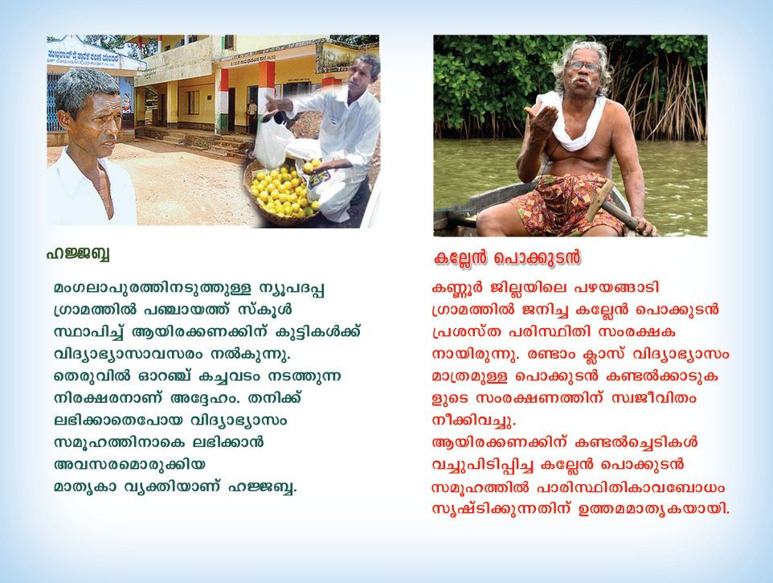
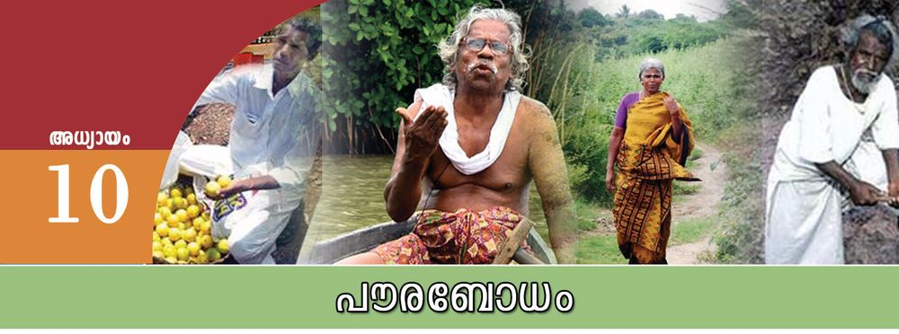
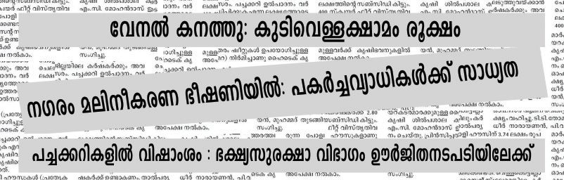
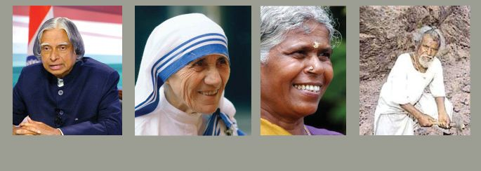
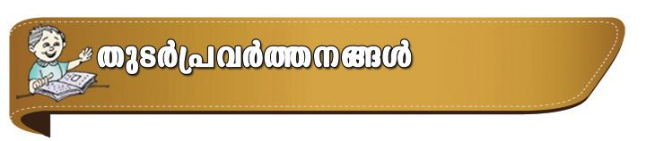

ഹ÷-∫യും ക√േ≥ പൊത്ഥുടനും സമൂഹ-ന-∑-യ്ത്ഥുവേ≠ി സ്വയം തിര™െടുസ്ഥ മേഖല-കളിൺ വലിയ സംഭാവനകƒ നൺകിയ-വരാണ്.
Page 55


Page 56




ല്ലാ≥ഡേയ്യഡ്
ത
സാമൂഹ്യശാസ്ത്രം ക
പൗരബോധം
ഇവരെത്ഥുറിണ്ണ് കൂടുതൺ വിവര-ത്മƒ ശേഖരിണ്ണ് സഹപാഠിക-ളുമായി ചയ്യണ്ണ ചെøാ≥ ശ്രമിത്ഥൂ. സാധാര-ണ വ്യ‡ികƒത്ഥുപോലും വളരെ ശ‡-മായ പ്രവയ്യസ്ഥന-ത്മƒ ഏ‰െടുത്ഥാ≥ കഴിയുമെന്ന സμേശ-മാണ് ഇവരുടെ ജീവിതം. വ്യത്യസ്തമായ ചിഗ്ലയും നിസ്വായ്യഥമായ പ്രവയ്യസ്ഥനവും സമൂഹ-സ്ഥി-‚െയും സഹജീവിക-ളുടെയും പ്രശ്നത്മളെത്ഥുറിണ്ണു≈ അവബോധ-വും സേവനസന്ന-≤-തയുമാണ് ഇവരെ മുന്നോന്തു നയിത്ഥുന്നത്. സമൂഹ-സ്ഥി‚െ പൊതുന∑-യ്ത്ഥുവേ≠ി പ്രവയ്യസ്ഥിത്ഥുന്ന വ്യ‡ികളെകുറിണ്ണ് വിവര-ശേഖരം നടസ്ഥി ഇവരുടെ പ്രവയ്യസ്ഥന-ത്മളിൺ കാണുന്ന സവിശേഷതകƒ പന്തിക-∏െടുസ്ഥുക. ഉസ്ഥമ-മായ സമൂഹ-സൃഷ്ടിത്ഥ് എ√ാവ-രിലും ക്രിയാ-fl-കമായ മനോഭാവ-ത്മളും മൂല്യത്മളും ഉ≠ാവേ-≠ത് അനിവാര്യമാണ്. ആധുനികസമൂഹ-സ്ഥിലെ ഓരോ അംഗവും പൗര≥ എന്ന- റ ഇ- യ - എ∏- ട ഉ- ന്ന ഉ. ഓരോ പൗരനും സമൂ- ഹ - സ്ഥ ഇന് വേ≠ിയു≈-താണെന്നും സമൂഹ-സ്ഥി‚െ ഉസ്ഥമ-താൺ∏-ര്യത്മളാണ് പൗര-‚േതെന്നുമു≈ തിരിണ്ണറിവാണ് പൗരബോധം. പൗരബോധ-മു-≈-വയ്യ അവന-വനോടും സമൂഹ-സ്ഥോടും മാനവിക-തയോടും കൂറും ഉസ്ഥര-വാദിസ്ഥവുമു-≈-വരായിരിത്ഥും.
പൗരബോധ-സ്ഥി‚െ പ്രാധാന്യം സമൂഹ-സ്ഥി-‚െയും രാഷ്ട്രസ്ഥി-‚െയും പുരോഗ-തിയെ പൗരബോധം വളരെ യധികം സ്വാധീനിത്ഥുന്നു. പൗരബോധ-മി-√െന്നിൺ മനുഷ്യ≥ സ്വായ്യഥനാവുകയും എ√ാ പ്രവയ്യസ്ഥന-ത്മളും സ്വഗ്ലം നേന്തത്മƒത്ഥു വേ≠ി മാത്രമാവുകയും ചെøും. ഇത് സാമൂഹികജീവിതസ്ഥെ പ്രതികൂല-മായി ബാധിത്ഥും. ഇസ്ഥരമൊരു സമൂഹ-സ്ഥിൺ സമാധാന-വും സുരക്ഷിതത്വവും ഉ≠ാവുക-യി-√. . നൺകിയിരിത്ഥുന്ന വായ്യസ്ഥാ തലത്ഥെന്തുകƒ നിരീക്ഷിത്ഥൂ. നΩുടെ പൊതുസമൂഹം അഭിമുഖീക-രിത്ഥുന്ന ചില പ്രശ്നത്മളാണ് ഇവിടെ സൂചി∏ിത്ഥുന്ന- ത ്. ഈ പ്രശ് ന - ത്മ ƒത്ഥ് പരിഹാരം കാണാ≥ രാഷ് ്രട- സ്ഥ ഇനു മാത്രമായി കഴിയുമോ? ജനത്മളുടെ കൂന്തായ പ്രവയ്യസ്ഥന-ത്മളും സഹക-രണവും ഇതിന് അനിവാര്യമാണ്. പൊതുസ-മൂഹം നേരിടുന്ന ചില പ്രശ്നത്മളും അവയ്ത്ഥു≈ ഏതാനും പരിഹാരമായ്യഗത്മളും നൺകിയിരിത്ഥുന്നു. കൂടുതൺ പരിഹാര-ത്മƒ എഴുതി പന്തിക വിപുലീക-രിത്ഥുക.
184
Page 57


ല്ലാ≥ഡേയ്യഡ്
സാമൂഹ്യശാസ്ത്രം ക
പൗരബോധം
പ്രശ്നത്മƒ
നമുത്ഥ് എഗ്ലെ√ാം ചെøാം?
$ ജലക്ഷാമം
$ ജലസ്ഥി‚െ കാര്യക്ഷമ-തയോടെയു≈ ഉപയോഗം $ $
$ മാലിന്യം
$ ഉറവിട- മാലിന്യസംസ്കരണം $ $ $ സുരക്ഷിത ÿാനത്മളിലേത്ഥ് മാറി താമസിത്ഥുക. $ $
$ പ്രളയം
$ അഴിമതി
$ അഴിമ-തിത്ഥെതിരായ ബോധവൺത്ഥരണം $ $
പൊതുസമൂഹം അഭി- മ ഉ- ഖ ഈ- ക - ര ഇ- ത്ഥ ഉന്ന പല പ്രശ് ന - ത്മ ƒത്ഥും പരി- ഹ ആരം കാണാ≥ പൗരബോധം സഹായിത്ഥുന്നുവെന്ന് ഇതിൺനിന്നു മന ഇലാത്ഥാം. ഒരു ക്ഷേമരാഷ്ട്ര രൂപീക-രണ-സ്ഥിൺ പൗരബോധം സുപ്രധാന പന്ന് പരിÿിതി സംരക്ഷണം, വഹിത്ഥുന്നു. പ്രതിസ'ിഘന്തത്മളിൺ സമൂഹ-സ്ഥി‚െ പുനയ്യനിയ്യമാണഅഴിമതിത്ഥെതിരായ ബോധവൺത്ഥര-ണം സ്ഥിനും അരക്ഷിതാവ-ÿ-യിൺ നിന്നു≈ മോചന-സ്ഥിനും ഇത് സമൂഎന്നീ മേഖല-കƒ ഹസ്ഥെ സഹായിത്ഥുന്നു. കേരള ജനതയെ ദുരിത-സ്ഥിലാഴ്സ്ഥിയ 2018 ഉƒ∏െടുസ്ഥി ലഘുചിത്രം തയാറാത്ഥി ആഗല്ലിലെ മഹാപ്രള-യസ്ഥെ അതിജീവിത്ഥാനായത് വ്യത്യസ്ത ജനഅവത-രി-∏ിത്ഥുക. വിഭാഗ-ത്മƒ ഒസ്ഥൊരുമ--യോടെ നടസ്ഥിയ രക്ഷാപ്രവവയ്യസ്ഥന-ത്മളാണ്. പൗരബോധ-സ്ഥി‚െ ഉസ്ഥമ ഉദാഹ-രണ-മായി ഇതിനെ പരിഗ-ണിത്ഥാവുന്നതാണ്. ഓരോരുസ്ഥരുടെയും പ്രവയ്യസ്ഥന-ത്മƒ സമൂഹ-ന-∑യ്ത്ഥ് വേ≠ിയാകുബ്ബോƒ സമൂഹ-സ്ഥിലെ പ്രശ്നത്മƒ പരിഹ-രിത്ഥാ≥ കഴിയുമെന്ന തിരിണ്ണറിവാണ് പൗരബോധ-സ്ഥി‚െ അടി-ÿാനം.
പൗരബോധസ്ഥെ നിയ്യണയിത്ഥുന്ന ഘടക-ത്മƒ പൗരബോധ രൂപീക-രണസ്ഥെ ജീവിത-സാഹ-ചര്യത്മളും അനുഭവത്മളും സ്വാധീനിത്ഥുന്നു. ഓരോ വ്യ‡ിത്ഥും ജീവിത-സാഹ-ചര്യത്മƒ വ്യത്യസ്ത അനുഭ-വത്മƒ നൺകുന്നതിനാൺ പൗരബോധ-സ്ഥിലും ഏ‰-ത്ഥുറ-ണ്ണിലുകƒ ഉ≠ാകും. പൗരബോധം രൂപ-∏െടുസ്ഥുന്ന പ്രധാന ഘടക-ത്മƒ താഴെ പറയുന്നു. $ $
കുടുംബം സംഘട-നകƒ
$ വിദ്യാഭ്യാസം
185
$ സാമൂഹികവ്യവÿ $ രാഷ്ട്രീയ-വ്യവÿ
ത
Page 58


ല്ലാ≥ഡേയ്യഡ്
ത
സാമൂഹ്യശാസ്ത്രം ക
പൗരബോധം
മുകളിൺ നൺകിയിന്തു≈ ഓരോ ഘടകവും വ്യ‡ിത്വരൂപീക-രണസ്ഥെ വളരെയധികം സ്വാധീനിത്ഥുന്നു-≠്. അവ മനുഷ്യ‚െ ചിഗ്ലയെയും പ്രവയ്യസ്ഥനസ്ഥെയും രൂപ- എ∏- ട ഉ- സ്ഥ ഉ- ന്ന ഉ. അനു- ക ഊ- ല മായ സാഹ- ച - ര ്യ- ത്മ ƒ മാത്ര- മ √, പ്രതികൂലവും വെ√ുവിളി- ഉയയ്യസ്ഥുന്നതുമായ സാഹച-ര്യത്മളും ഒരു വ്യ‡ിയിൺ ശ‡-മായ പൗരബോധം രൂപ-∏െടുസ്ഥുന്നതിന് സഹായ-കമാകും. വ്യത്യസ്ത ജീവിതസാഹച-ര്യത്മƒ എത്മനെയെ-√ാമാണ് പൗരബോധം രൂപ-∏െടുസ്ഥാ≥ സഹായിത്ഥുന്നതെന്ന് ചയ്യണ്ണചെøുക. അനുകൂലവും പ്രതികൂല-വുമായ സാഹച-ര്യത്മളുടെ സ്വാധീന-ഫല-മായി പൗരബോധം രൂപ-∏െന്ത വ്യ‡ിത്വത്മളെ ക≠െസ്ഥി പന്തിക-∏െടുസ്ഥുക.
പൗരബോധം എത്മനെ വളയ്യസ്ഥിയെടുത്ഥാം? പൗരബോധം വളയ്യസ്ഥിയെടുത്ഥുക-യും നിലനിയ്യസ്ഥുക-യും ചെøേ≠ത് അനിവാര്യമാണ്. പൗരബോധം വളയ്യസ്ഥിയെടുത്ഥുന്നതിന് ബോധപൂയ്യവമായ ശ്രമത്മƒ ആവശ്യമാണ്. ഏതു സമൂഹവും പൗരബോധം വളയ്യസ്ഥുന്നതിന് ക്രിയാflകമായ നടപ-ടികƒ കൈത്ഥൊ-≈ാറു-≠്. സാമൂഹികന∑ പൂയ്യണമായും ഉƒത്ഥൊ-≠ുകൊ≠് നടസ്ഥുന്ന ക്രിയാ-flക ഇടപെട-ലിലൂടെ മാത്രമേ എ√ാവ-രിലും പൗരബോധം വളയ്യസ്ഥിയെടുത്ഥാ≥ കഴിയുക-യു-≈ൂ. ഏതാനും മായ്യഗത്മƒ താഴെത്ഥൊടുത്ഥുന്നു.
കുടുംബം മുതിയ്യന്നവരെ ബഹുമാനിത്ഥാനും സമൂഹസേവ-നസ്ഥിലേയ്യ∏െടാനും നാം പഠിത്ഥുന്നത് പ്രാഥമികÿാപന-മായ കുടുംബ-സ്ഥിൺ നിന്നാണ്. അംഗത്മളിൺ കയ്യസ്ഥവ്യബോധം വളയ്യസ്ഥുന്നതിലും നിലനിയ്യസ്ഥുന്നതിലും കുടുംബം വലിയ പന്നു വഹിത്ഥുന്നു-≠്. കുടുംബ-സ്ഥിൺനിന്നു≈ പ്രചോദനവും പ്രോ'ാഹനവും പല-∏ോഴും ഉന്നത-മായ പൗരബോധം വളയ്യസ്ഥും. ഓരോ വ്യ‡ിയും കുടും- ബ - സ്ഥ ഇ- ന ഉ- ഏവ- ≠ ഇയും കുടുംബം സമൂ- ഹ - സ്ഥ ഇനുവേ≠ി- യ ഉ- മ ആ- എണന്ന ബോധ്യം കുടുംബാഗ്ലരീക്ഷസ്ഥിൺ വളയ്യസ്ഥിയെടുത്ഥാ≥ കഴിയ-ണം. കുടുംബം പൗരബോധരൂപീക-രണസ്ഥെ ഏതു രീതിയിൺ സ്വാധീനിത്ഥുന്നു? ചയ്യണ്ണ ചെøുക.
വിദ്യാഭ്യാസം നിത്മളുടെ സ്കൂƒ നടസ്ഥുന്ന വിവിധ പ്രവയ്യസ്ഥന-ത്മƒ ഉƒ∏െടുസ്ഥി ഞ്ഞോഗ് തയാറാത്ഥുക.
വിവിധ വിഷയ-ത്മളുടെ പഠന-സ്ഥിലൂടെ ലഭിത്ഥുന്ന അറിവുകƒ സമൂഹ-സ്ഥിന് പ്രയോജ-നക-രമായ രീതിയിൺ ഉപയോഗിത്ഥാ≥ വ്യ‡ിയെ പ്രാപ്തനാത്ഥുകയാണ് വിദ്യാഭ്യാസ-സ്ഥി‚െ ലക്ഷ്യം. മൂല്യബോധം, സഹിഷ്ണുത, നേതൃത്വഗുണം, പരി-ÿിതിബോധം, ശാസ്ത്രാവ-ബോധം തുടത്മിയവ വളയ്യസ്ഥിയെടുത്ഥാ≥ വിദ്യാഭ്യാസം സഹായിത്ഥും. ശാസ്ത്രവും സാന്നേതിക-വിദ്യയും സമൂ-
186
Page 59


ല്ലാ≥ഡേയ്യഡ്
സാമൂഹ്യശാസ്ത്രം ക
പൗരബോധം
ഹസ്ഥിന് പ്രയോജ-നക-രമായ രീതിയിൺ ഉപയോഗ-∏െടുസ്ഥാ≥ വിദ്യാഭ്യാസസ്ഥിലൂടെ സാധിത്ഥണം. മൂല്യാധിഷ്ഠിത വിദ്യാഭ്യാസസമീപ-നസ്ഥിലൂടെ പൗരബോധം ജനത്മളിലെസ്ഥിത്ഥാ≥ കഴിയും. ഗവച്ചമെ‚ുകƒ വിദ്യാഭ്യാസ നയത്മƒത്ഥ് രൂപം നൺകുന്നത് ഈ ലക്ഷ്യസ്ഥോടെയാണ്. പൗരബോധ രൂപീക-രണ-സ്ഥിനുത-കുന്ന എഗ്ലെ√ാം പ്രവയ്യസ്ഥന-ത്മƒ സ്കൂളിന് ഏ‰െ- ട ഉ- ത്ഥ ആ≥ കഴി- യ ഉം. വായ്യഷിക കല- ≠ യ്യ തയാ- റ ആത്ഥി നട-∏ാത്ഥുക.
സംഘട-നകƒ രാഷ്ട്രീയവും സാമൂഹികവും സാബ്ബസ്ഥികവും സാംസ്കാരിക-വുമായ നിരവധി സംഘട-നകƒ നΩുടെ സമൂഹ-സ്ഥിലു≠് എന്ന് നിത്മƒത്ഥറിയാമ-√ോ. സേവന-സന്ന-≤തയോടെ പ്രവയ്യസ്ഥിത്ഥാ≥ ഒരു വ്യ‡ിയെ പ്രാപ്തനാത്ഥുന്നത് പല-∏ോഴും ഇസ്ഥരം സംഘട-നക-ളാണ്. പരി-ÿിതിസംരക്ഷണം, മനുഷ്യാവ-കാശ-സംരക്ഷണം, ജീവകാരുണ്യപ്രവയ്യസ്ഥനം തുടത്മിയ മേഖല-കളിൺ നിരവധി സന്ന-≤-സംഘ-ടനകƒ പ്രവയ്യസ്ഥിത്ഥുന്നു-≠്. പാരി-ÿിതിക അവബോധവും മനുഷ്യാവ-കാശബോധവും വ്യ‡ികളിൺ സൃഷ്ടിത്ഥാ≥ ഇസ്ഥരം സംഘട-നകƒത്ഥു സാധിത്ഥും.
മാധ്യമ-ത്മƒ പൗരബോധ-രൂപീക-രണ-സ്ഥിൺ മാധ്യമ-ത്മƒത്ഥ് വലിയ ÿാനമാണു≈-ത്. അണ്ണടിമാധ്യമ-ത്മളും ഇലക്ട്രോണിക് മാധ്യമ-ത്മളും സമൂഹസ്ഥെ വളരെയ-ധികം സ്വാധീനിത്ഥുന്നു-≠്. വായ്യസ്ഥകളും വിവര-ത്മളും ജനത്മളി-ൺ എസ്ഥിത്ഥുന്നത് മാധ്യമ-ത്മളാണ്. ശരിയായതും വസ്തുനിഷ്ഠവുമായ വിവര-ത്മƒ ക്രിയാ-flകമായ ആശയ-രൂപീക-രണ-സ്ഥിലേത്ഥു നയിത്ഥും. മാധ്യമ-ത്മƒ നിഷ്പക്ഷവും സ്വതഗ്ല്രവുമായിരിത്ഥണം. മാധ്യമ-ത്മളിൺനിന്നു ലഭിത്ഥുന്ന അറിവുകƒ വിമയ്യശനാ-fl-കമായി വിലയിരുസ്ഥണം. പൗരബോധം പ്രതിഫ-ലി-∏ിത്ഥുന്ന വായ്യസ്ഥകളും ചിത്രത്മളും ഉƒ∏െടുസ്ഥി ആൺബം തയാറാത്ഥുക.
ജനാധിപത്യവ്യവÿ പൗരബോധ-സ്ഥിന് അനിവാര്യമായ ഒരു -ഘട-കമാണ് ജനാധിപ-ത്യം. പൗരബോധം വളയ്യസ്ഥിയെടുത്ഥുന്നതിന് സഹായിത്ഥുന്ന എ√ാ ഘടക-ത്മളുടെയും അടി-ÿാനം ജനാധിപ-ത്യമാണ്. ജനാധിപത്യം ഒരു ഭരണ-ക്രമം എന്നതിലുപരി ജീവിത-ശൈലിയാണ്. നΩുടെ എ√ാ പ്രവയ്യസ്ഥന-ത്മളിലും ജനാധിപത്യ സമീപനം ഉ≠ായിരിത്ഥണം. ജനത്മƒ പരസ്പര-സഹ-കര-ണസ്ഥോടെ ജീവിത്ഥേ-≠ത് ജനാധിപത്യ സമൂഹ-സ്ഥിന് അനിവാര്യമാണ്. മ‰ു-≈-വരിൺ നിന്നും സ്വീകരിത്ഥുന്ന സഹക-രണവും പിഗ്ലുണയും തിരികെ നൺകുക-യെന്നത്
187
ത
Page 60




ല്ലാ≥ഡേയ്യഡ്
ത
സാമൂഹ്യശാസ്ത്രം ക
പൗരബോധം
ഉയയ്യന്ന ജനാധിപത്യ ബോധസ്ഥി‚െ അടയാള-മാണ്. ജനാധിപത്യം സഹജീവിക-ളെത്ഥുറിണ്ണ് ചിഗ്ലിത്ഥാനും അവരുടെ സ്വാതഗ്ല്ര്യം, സമത്വം, അവകാശത്മƒ എന്നിവ സംരക്ഷിത്ഥുന്നതിന് വേ≠ി പ്രവയ്യസ്ഥിത്ഥാനും വ്യ‡ികളെ പ്രേരി-∏ിത്ഥും. ജനാധിപത്യം നിയമ-വാഴ്ചയിൺ വിശ്വസിത്ഥുന്നു. എ√ാവരും നിയമ-വിധേയ-രാണ് എന്നതാണ് ഇതി‚െ അടി-ÿാനം.
ഉസ്ഥമ-മാതൃക-കƒ പരിച-യ-∏െടൺ
എ.പി.ജെ. അബ്ദുൺ കലാം
മദയ്യ തെരേസ
മയിലΩ
ദശരഥ് മാഞ്ചി
ചിത്രത്മƒ നിരീക്ഷിത്ഥൂ. ഇവരൊത്ഥെ സമൂഹ-സ്ഥിന് വലിയ സംഭാവ-നകƒ നൺകിയ ഉസ്ഥമ-പൗ-രബോധ-മു≈ വ്യ‡ിത്വത്മളിൺ ചിലരാണ്. ഇവരുടെ പ്രവയ്യസ്ഥന-മേഖ-ലയും സംഭാവ-നയും ക≠െസ്ഥൂ. വിവിധ മേഖല-കളിൺ പ്രവയ്യസ്ഥിത്ഥുബ്ബോഴും മാനുഷിക-തയും സഹജീവിസ്നേഹവും കയ്യസ്ഥവ്യബോധവും ഇവയ്യ പ്രകടി-∏ിത്ഥുക-യു-≠ായി. സ്വഗ്ലം പ്രവയ്യസ്ഥനമേഖ-ലയിൺ നിസ്വായ്യഥമായും അയ്യ∏-ണമ-നോഭാവ-സ്ഥോടെയും എ√ാവരും പ്രവയ്യസ്ഥിത്ഥണം. ഓരോ വ്യ‡ിയെയും ഇസ്ഥര-സ്ഥിൺ ചിഗ്ലി-∏ിത്ഥുകയും പ്രവയ്യസ്ഥി-∏ിത്ഥുകയും ചെøുബ്ബോഴാണ് സമൂഹപുരോഗതി സാധ്യമാകുന്നത്. ജൈവകൃഷി, ട്രാഫിക് ബോധവൺത്ഥര-ണം, ലഹരിവിരു≤പ്രവയ്യസ്ഥനം, ജീവകാരുണ്യപ്രവയ്യസ്ഥന-ത്മƒ, ദുരിതാശ്വാസപ്രവയ്യസ്ഥന-ത്മƒ എന്നിവ-യിൺ നിത്മളും പന്നാളിക-ളാകാറു-≠-√ോ. നിത്മളിലെ പൗരബോധ-മാണ് ഇതു വ്യ‡മാത്ഥുന്നത്. പൗരബോധം രൂപ-∏െടുന്നതിന് വിദ്യാല-യത്മളിൺ നട-∏ാത്ഥുന്ന പ്രവയ്യസ്ഥന-ത്മƒ ഏതെ-√ാമാണെന്ന് പന്തിക-∏െടുസ്ഥുക.
പൗരബോധവും ധായ്യമിക-തയും മനുഷ്യജീവിത-സ്ഥി‚െ എ√ാ തലത്മളിലും ഉ≠ാവേ≠ ധായ്യമിക-തയെ സംബ'ിണ്ണ ഗാ'ിജിയുടെ കാഴ്ച-∏ാടാണ് മുകളിൺ നൺകിയിരിത്ഥുന്നത്. എ√ാ പ്രവയ്യസ്ഥന-ത്മളുടെയും അടിസ്ഥറ ധായ്യമിക-തയാണ്. എഗ്ലാണ് ധായ്യമിക-ത? ന∑-തി-∑-കƒ തിരിണ്ണറി-™് ന∑യെ സ്വീകരിത്ഥുകയും കടമ-കƒ ഉസ്ഥര-വാദിത്വസ്ഥോടെ നിയ്യവഹിത്ഥുക-യുമാണ് ധായ്യമികത എന്നതുകൊ-≠യ്യഥമാത്ഥുന്നത്.
188
Page 61


ല്ലാ≥ഡേയ്യഡ്
സാമൂഹ്യശാസ്ത്രം ക
പൗരബോധം
സമൂഹ-സ്ഥോടും രാജ്യസ്ഥോടുമു≈ കടമ നിറവേ-‰ുക ഓരോ വ്യ‡ിയുടെയും ധയ്യമമാണ്.
ധായ്യമികത ഗാ'ിജിയുടെ കാഴ്ച-∏ാടിൺ $ $ $ $ $ $ $
ആദയ്യശമി-√ാസ്ഥ രാഷ്ട്രീയം അധ്വാന-മി-√ാസ്ഥ സബ്ബസ്ഥ് മനുഷ്യത്വമി-√ാസ്ഥ ശാസ്ത്രം ധായ്യമിക-തയി-√ാസ്ഥ വാണിജ്യം സ്വഭാവമഹിമയി√ാസ്ഥ വിദ്യാഭ്യാസം ത്യാഗമി-√ാസ്ഥ ആരാധന മന ആക്ഷിയി-√ാസ്ഥ സഗ്ലോഷം ഇവ അത്യഗ്ലം അപകടമാണ്. നΩുടെ ചിഗ്ലയെയും പ്രവൃസ്ഥികളെയും വിലയിരുസ്ഥി നോത്ഥൂ. അവയിൺ സ്വീകരാര്യവും അസ്വീക-രാര്യവുമായ പ്രവയ്യസ്ഥന-ത്മƒ ക≠െസ്ഥി പന്തിക-∏െടുസ്ഥുക.
ധായ്യമികത പൗരബോധസ്ഥെ സഹായിത്ഥുന്നു. എന്നാൺ അധായ്യമികത പൗരബോധം ഇ√ാതാത്ഥുന്നു. ജീവിത-സ്ഥി‚െ എ√ാ മേഖല-കളിലും ധായ്യമികബോധം സൃഷ്ടിത്ഥലാണ് പൗരബോധം വളയ്യസ്ഥിയെടുത്ഥാനു≈ ഏ‰വും ഫലപ്രദ-മായ മായ്യഗം. പൗരബോധം ക്രിയാ-fl-കമായൊരു മാനസികാവ-ÿയാണ്. പൗരബോധമു≈തും പൗരബോധ-മി-√ാസ്ഥതുമായ ചില പ്രവയ്യസ്ഥന-ത്മƒ താഴെ കൊടുസ്ഥിരിത്ഥുന്നു. അവയിൺ പൗരബോധ-സ്ഥിനു നേരെ () അടയാളവും പൗരബോധ-മി-√ായ്മയ്ത്ഥുനേരെ () അടയാളവും രേഖ-∏െടുസ്ഥുക.
പൗരബോപൗര -ബോധം- ധമി√ായ്മ
പ്രസ്താവന $ എത്ര തിരത്ഥു-≠െന്നിലും വാഹന-മോടിത്ഥുബ്ബോƒ ട്രാഫിക് നിയമ-ത്മƒ പാലിത്ഥണം. $ വീന്തിലെ മാലിന്യത്മƒ പൊതുവ-ഴിയിൺ നിക്ഷേപിത്ഥുന്നതിൺ തെ‰ി-√. $ ചരിത്രസ്മാര-കത്മƒ സംരക്ഷിത്ഥുക-യെന്നത് എ‚െയും കടമ-യാണ്. $ പ്രകൃതിയെ സംരക്ഷിത്ഥേ-≠ത് എ‚െ കടമ-യാണ്. $ അനീതിത്ഥെതിരെ പരാതി-∏െടാ≥ പാടി-√. $ അത്യാവശ്യ സμയ്യഭത്മളിൺ അഴിമതി നടസ്ഥാം. $ വൃ≤രെ ബഹുമാനിത്ഥുകയും സംരക്ഷിത്ഥുകയും വേണം.
189
ത
Page 62


ല്ലാ≥ഡേയ്യഡ്
ത
സാമൂഹ്യശാസ്ത്രം ക
പൗരബോധം
പൗരബോധം വെ√ുവിളികƒ പൊതുതാൺ∏-ര്യത്മളെ അവഗ-ണിണ്ണ് സ്വഗ്ലം താൺ∏-ര്യത്മƒത്ഥുവേ≠ി എഗ്ലും ചെøാ≥ തയാറാവുന്നതാണ് പൗരബോധം നേരിടുന്ന പ്രധാന വെ√ുവിളി. എത്മനെ ഈ വെ√ുവിളികളെ മറിക-ടത്ഥാം? ഓരോരുസ്ഥരും അവര-വരുടെ പ്രവയ്യസ്ഥ- ന - ത്മ ളെ വിമയ്യശപൗരബോധ-മു≈ വിദ്യായ്യഥികƒ സമൂഹസ്ഥിന് മാതൃകാനാflകമായി വിലയിരുസ്ഥുക. പര-മായ നിരവധി പ്രവയ്യസ്ഥന-ത്മƒ ഏ‰െടുത്ഥും. ചിലതു $ പൊതുതാൺ∏-ര്യത്മƒ ഹനിതാഴെ -കൊടുത്ഥുന്നു. കൂടുതൺ പ്രവയ്യസ്ഥന-ത്മƒ ക≠െത്ഥാതെ സ്വഗ്ലം താൺ∏- ര ്യസ്ഥുമ-√ോ. ത്മƒത്ഥുവേ≠ി പരിശ്രമിത്ഥു$ അവയദാനസ-Ω-തപത്രം നൺകൺ. ക. $ ര‡-ദാന-സ്ഥിന് തയാറാകൺ. $ മ‰ു-≈-വരിൺനിന്നു പ്രതീക്ഷി$ എസ്.-പി.-സി, എ≥.-സി.-സി, സ്കൗന്ത്സ് & ഗൈഡ്സ്, ത്ഥുന്ന മാ‰-ത്മƒ നΩിൺനിന്നു മ‰് ക്ല∫ുകƒ തുടത്മിയ-വയുടെ പ്രവയ്യസ്ഥന-ത്മളിൺ തുടത്മുക. പന്നാളിയാകൺ. $ ജനാ- ധ ഇ- പ - ത ്യസ്ഥിലും സഹി$ പൊതു ഇടത്മƒ വൃസ്ഥിയായി സൂക്ഷിത്ഥൺ. ഷ്ണുത-യിലും അധിഷ്ഠിത$ അപക-ടസ്ഥിൺ∏െന്തവയ്യത്ഥു പ്രഥമ ശുശ്രൂഷ നൺകൺ. മായി പ്രവയ്യസ്ഥിത്ഥുക. $ ഭിന്നശേഷിയു-≈-വരെയും വൃ≤-രെയും സഹായി$ അവകാശ-ത്മƒത്ഥൊ∏ം ചുമത്ഥൺ. തലകƒത്ഥും തുല്യപ-രിഗ-ണന $ നൺകുക. $ ഇസ്ഥ- ര - സ്ഥ ഇ- ല ഉ≈ കൂടു- ത ൺ പ്രവയ്യസ്ഥന-ത്മƒ ഏ‰െടുത്ഥുന്നത് പൗരബോധ-സ്ഥി‚െ വെ√ുവിളികƒ മറികടത്ഥാ≥ സഹായിത്ഥും.
നമുത്ഥും പ്രവയ്യസ്ഥന-ത്മƒ ഏ‰െടുത്ഥാം...
$
സാമൂഹ്യശാസ്ത്രപ-ഠനവും പൗരബോധവും സാമൂഹ്യശാസ്ത്ര പഠന-സ്ഥിന് പൗരബോധ രൂപീക-രണ-സ്ഥിൺ പ്രധാന പന്നു വഹിത്ഥാ≥ കഴിയും. മനുഷ്യനും സമൂഹ-വുമായി ചേയ്യന്നു നിൺത്ഥുന്ന പഠനമേഖല എന്ന നിലയിൺ സാമൂഹ്യശാസ്ത്ര പഠനം ഓരോ വ്യ‡ിയിലും സമഗ്രമായ മാ‰ം വിഭാവനം ചെøുന്നു. പൗരബോധ രൂപീക-രണ-സ്ഥിന് സാമൂഹ്യശാസ്ത്ര പഠനസ്ഥെ എത്മനെ പ്രയോജ-ന-∏െടുസ്ഥാം എന്ന് പരിശോധിത്ഥാം. $ $ $ $
വൈവിധ്യത്മളെ ബഹുമ-ാനിത്ഥാനും സഹിഷ്ണുത-യോടെ പെരുമാറാനും വ്യ‡ികളെ പ്രാപ്തരാത്ഥുന്നു. രാഷ്ട്രീയ˛-സാമൂഹിക˛സാബ്ബസ്ഥിക-˛-പാരി-ÿിതികപ്രശ്നത്മളുടെ വിവിധ പ›ാസ്ഥലത്മƒ മന- ഇലാത്ഥാ≥ സഹായിത്ഥുന്നു. വിവിധ പ്രശ്നത്മƒത്ഥ് സമഗ്രമായ പരിഹാരം നിയ്യദേശിത്ഥാ≥ വ്യ‡ികളെ പ്രാപ്തരാത്ഥുന്നു. സമാധാന-സ്ഥി-‚െയും സഹവയ്യസ്ഥിത്വസ്ഥി-‚െയും സμേശം ജനത്മളിലെസ്ഥിത്ഥുന്നു.
190
Page 63


ല്ലാ≥ഡേയ്യഡ്
സാമൂഹ്യശാസ്ത്രം ക
പൗരബോധം
$
പൗരബോധ-സ്ഥി‚െ ഉസ്ഥമ-മാതൃക-കളും പ്രവയ്യസ്ഥന-ത്മളും പരിച-യ∏െടുസ്ഥി വ്യ‡ികളെ പൗരബോധ-മു-≈-വരാത്ഥുകയും കയ്യമനിര-തരാത്ഥുകയും ചെøുന്നു. ഒരു സമൂഹ-സ്ഥി‚െ വളയ്യണ്ണയ്ത്ഥും വികാസ-സ്ഥിനും സുÿിര-മായ നിലനിൺ∏ിനും പൗരബോധം അത്യാവ-ശ്യമാണെന്ന് നിത്മƒ മന- ഇലാത്ഥിയ-√ോ. പക്ഷേ, എ√ാ വ്യ‡ിക-ളിലും പൗരബോധം സൃഷ്ടിത്ഥുക എന്നത് ശ്രമക-രമായ ഒരു ദൗത്യം തന്നെയാണ്. എന്നാൺ മഹസ്ഥായ ഈ ദൗത്യം നിയ്യവഹിത്ഥുന്നതിനു≈ എളു-∏-വഴി നΩƒ ഓരോരുസ്ഥരും പൗരബോധ-മു-≈-വരായിസ്ഥീരുക എന്ന്-≈-താണ്.
പൗരബോധം
പ്രാധാന്യം
പൗരബോധം നിയ്യണയിത്ഥുന്ന വളയ്യസ്ഥിയെടു- പൗരബോധവും പൗരബോധവും സാമൂഹ്യശാസ്ത്രഘടക-ത്മƒ ത്ഥുന്നതിനു≈ ധായ്യമിക-തയും വെ√ുവിളിയും പഠ-നവും പൗരബോധവും മായ്യഗത്മƒ
$
പൗരബോധം എന്നാലെഗ്ല്? പൗരബോധം രൂപ-∏െടുസ്ഥുന്ന പ്രധാനഘട-കത്മƒ ഏതെ√ാം?
$
പൗരബോധ-മു≈ വ്യ‡ിക-ളിൺ കാണുന്ന സവിശേഷ-തകƒ പന്തിക∏െടുസ്ഥുക.
$
ധായ്യമികത പൗരബോധം വളയ്യസ്ഥിയെടുത്ഥുന്നതിൺ വഹിത്ഥുന്ന പന്ന് വിശദ-മാത്ഥുക.
$
പൊതുസ-മൂഹം നേരിടുന്ന പ്രശ്നത്മƒത്ഥു പരിഹാരം കാണുന്നതിന് പൗരബോധം എത്മനെ സഹായിത്ഥുന്നു? ഉദാഹ-രണ-ത്മƒ സമയ്യഥിത്ഥുക.
$
ഉയയ്യന്ന പൗരബോധം പ്രകടി-∏ിണ്ണ ഉസ്ഥമ-മാതൃക-കƒത്ഥ് ചില ഉദാഹരണ-ത്മƒ നൺകു--ക.
$
പൗരബോധം വളയ്യസ്ഥിയെടുത്ഥുന്നതിൺ കുടുംബം, വിദ്യാഭ്യാസം, മാധ്യമ-ത്മƒ എന്നിവ വഹിത്ഥുന്ന പന്ന് വിശദ-മാത്ഥുക.
$
പൗരബോധം നേരിടുന്ന വെ√ുവിളികƒ പരിഹ-രിത്ഥാനു≈ മായ്യഗത്മƒ നിയ്യദേശിത്ഥുക.
$
"സാമൂഹ്യശാസ്ത്രപഠന-വും- പൗ-രബോധവും' എന്ന വിഷയസ്ഥിൺ ഒരു കുറി∏് തയാറാത്ഥുക.
191
ത
Page 64



ല്ലാ≥ഡേയ്യഡ്
ത
സാമൂഹ്യശാസ്ത്രം ക
പൗരബോധം
$
ഉയയ്യന്ന പൗരബോധം പ്രകടി-∏ിണ്ണ് ഉസ്ഥമ-മാതൃക-കളായിസ്ഥീയ്യന്ന മഹത്വ്യ‡ിത്വത്മളെത്ഥുറിണ്ണ് വിവര-ശേഖ-രണം നടസ്ഥി ആൺബം തയാറാത്ഥുക.
$
പൗരബോധം പ്രകടി-∏ിത്ഥുന്നതിന് വിവിധ മേഖല-കളിൺ വിദ്യായ്യഥികƒത്ഥ് ചെøാ≥ സാധിത്ഥുന്ന കാര്യത്മƒ ക≠െസ്ഥി പന്തിക തയാറാത്ഥുക.
$
പൗരബോധ-മി-√ാസ്ഥ സമൂഹം നേരിടുന്ന ഭീഷണികƒ ക≠െസ്ഥി റി∏ോയ്യന്ത് തയാറാത്ഥുക.
192